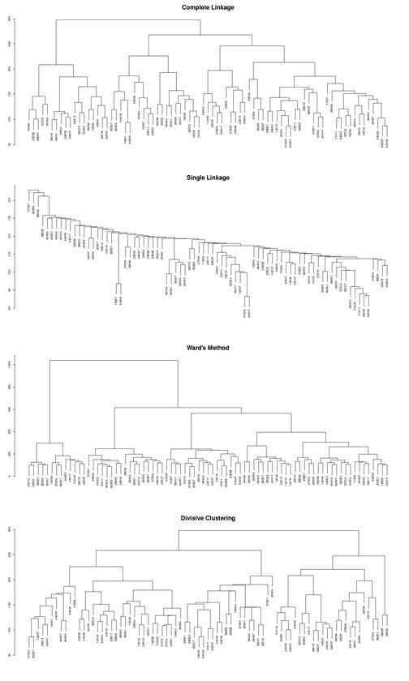

Figure 10.3:
Four different dendrogram s, clustering samples. The first three (top to bottom) were computed using agglomerative hierarchical clustering with different linkage methods, the bottom one used divisive hierarchical clustering .